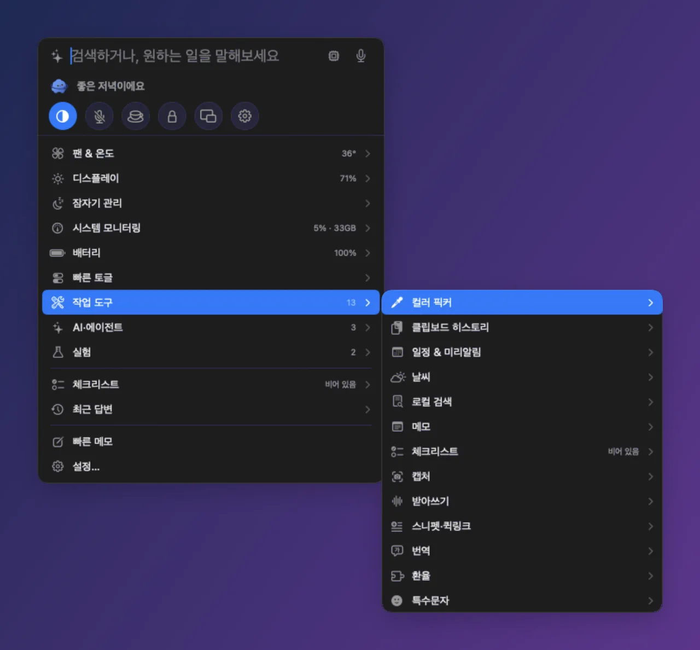
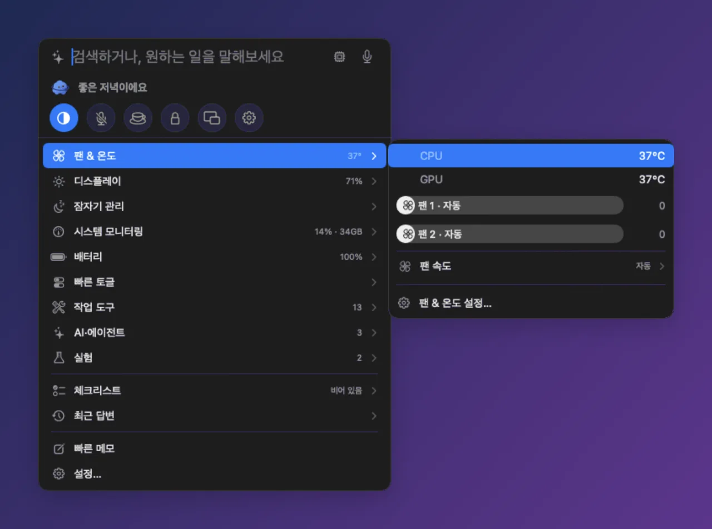
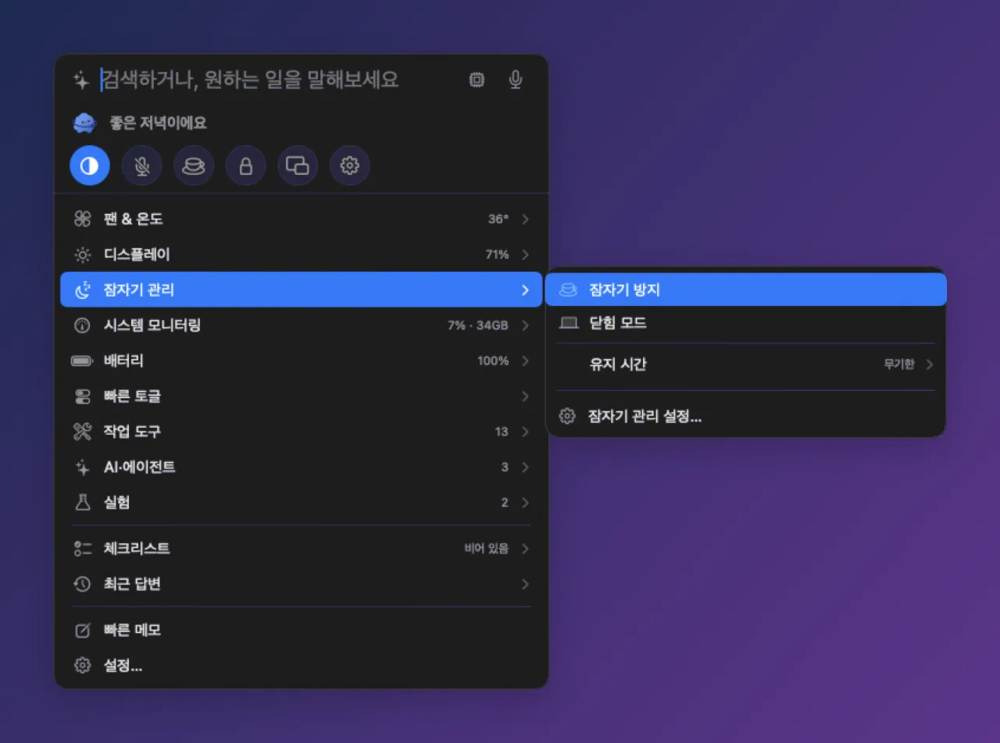
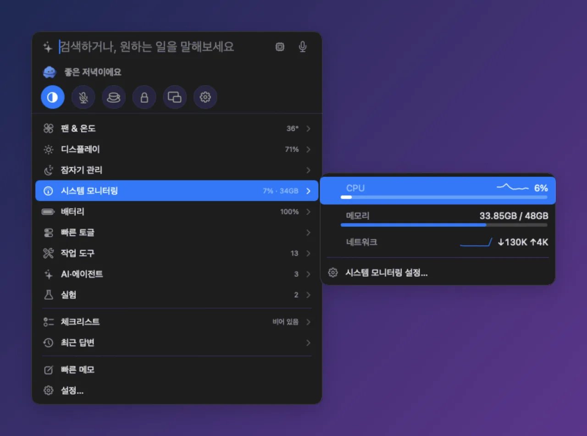

AI 사용량
Claude Code · Codex의 5시간 · 주간 한도를 얼마나 썼는지 막대로 보여 주고, 메뉴바와 경고 색으로도 알려 줍니다.
클로드 사용량codex 한도메뉴바 앱, 아직도 열두 개씩 깔아 쓰세요?
팬·온도, 밝기, 키 바꾸기, 배터리, 잠자기, 클립보드, 창 맞추기, 캡처까지 — 따로 깔던 앱들이 하던 일을 무료 앱 하나에, ⌥Space 한 번으로. Claude Code · Codex 사용량과 에이전트 세션, Apple 온디바이스 AI까지 같은 자리에서.
무료 · macOS 14+ · Apple Silicon · Apple 공증 완료
따로 깔던 앱 12개가 하던 일, 이제 Divee 하나로
AI와 같이 일하는 Mac이라면, 따로 띄워 두던 창과 앱도 Divee 하나로 됩니다.
Claude Code · Codex의 5시간 · 주간 한도를 얼마나 썼는지 막대로 보여 주고, 메뉴바와 경고 색으로도 알려 줍니다.
클로드 사용량codex 한도열려 있는 Claude Code · Codex 세션 중 승인을 기다리거나 새 답이 온 세션을 알려 주고, 패널에서 바로 답장합니다.
하고 싶은 일을 문장으로 쓰면 켜 둔 기능을 대신 실행합니다. Apple 온디바이스 모델(macOS 26 이상) → Ollama 순으로 이 Mac 안에서 먼저 처리합니다.
화면 좀 어둡게30분 동안 잠자기 막아 줘규칙에 안 걸리는 문장도 Mac 안의 작은 분류기(24 KB)가 알맞은 카드를 골라 ✦ 온디바이스 표시를 붙입니다.
야간 모드로 바꿔줘노션 좀 꺼줘Apple 온디바이스 번역(macOS 15 이상)과 이 Mac 안의 음성 인식 — 글과 목소리가 밖으로 나가지 않습니다.
hello 한국어로⌃⌥Space를 누른 채 말하기클라우드 모델은 서버를 직접 지정했을 때만, 이 Mac 안에서 안 되거나 “클라우드로”라고 할 때 씁니다(답에 ☁︎ 표시). 되돌리기 어려운 일은 실행 전에 먼저 묻습니다.
항목에 마우스를 올리거나 → 를 누르면, Windows 우클릭 메뉴처럼 옆으로 펼쳐집니다. 최대 3단까지 이어집니다.

Enter를 누르기 전에 바로 카드로 바뀝니다. AI 없이 이 Mac 안에서 계산하고, 한글을 조합하는 중에도 바로 반영됩니다.
CPU·GPU 온도와 팬마다 조절바. 끌어서 놓으면 그 팬이 수동이 되고, 자동 · 최대 · 온도 연동도 고를 수 있습니다.

✓ 잠자기 방지, ✓ 닫힘 모드(덮개를 닫아도 계속 켜 둠) — 무기한 · 30분 · 1 · 2 · 4시간.

패널이 닫혀 있을 때 CPU 약 0.2%·메모리 약 42MB, 열어 둬도 CPU 약 1%. 앱 크기는 13MB입니다.

각 모듈은 설정 › 기능에서 켜고 끕니다.
Karabiner 같은 키 규칙을 쉽게.
내장·외장 모니터 밝기.
잔량·건강도·사이클·전력.
복사한 것 다시 꺼내기.
Magnet처럼 창을 반쪽·사분면·1/3에 맞추기.
스크린샷 · 글자 캡처 · 화면 녹화.
어디서나 키를 누르고 말하기.
다크 모드 · 마이크 음소거 · 화면 잠금 등 자주 쓰는 스위치.
코딩 없이 새 기능·모양·캐릭터를 더하기.
필요한 기능을 켰을 때만 데이터가 밖으로 나가며, 설정 › 정보에 지금 켜진 항목이 그대로 표시됩니다.
켠 기능만, 정해진 곳으로만.
| 기능 | 보내는 것 | 받는 곳 |
|---|---|---|
| 날씨 | 도시 이름 | open-meteo.com |
| 웹 검색 | 검색어 | Bing |
| AI 사용량 | 내 사용량 조회 (Codex) | OpenAI 서버 |
| 원격 AI 백엔드를 직접 고른 경우 | 입력한 문장 | 고른 서버 |
| 업데이트 확인 (하루 1회, 끌 수 있음) | 앱 버전 | GitHub |
| 피드백 보내기 (직접 제출할 때만) | 적은 내용 + Divee 버전 · macOS 버전 · 칩 | 브라우저에서 여는 GitHub 이슈 |
| 환율 플러그인 (켤 때만) | 통화 코드 | api.frankfurter.dev |
켜는 기능에 필요한 권한만, 이유와 함께 물어봅니다. 팬 속도 조절 · 닫힘 모드용 백그라운드 도우미는 로그인 항목에서 한 번만 승인합니다.
네. Divee는 무료로 쓸 수 있습니다.
macOS 14 Sonoma 이상, Apple Silicon Mac(M1 이후)이 필요합니다. 일부 기능은 더 새 macOS가 필요합니다 — Apple 온디바이스 모델은 macOS 26 이상, 온디바이스 번역은 macOS 15 이상.
기본은 아닙니다. AI는 로컬 우선이라 Apple 온디바이스 → Ollama 순으로 이 Mac 안에서 처리합니다. 서버를 직접 지정했을 때만, 안 될 때나 “클라우드로”라고 할 때 그 서버로 넘기고, 넘긴 답에는 ☁︎가 붙습니다.
켜는 기능에 필요한 권한만, 이유와 함께 묻습니다 — 예를 들어 키 바꾸기 카드와 창 맞추기는 손쉬운 사용, 캡처는 화면 기록. 팬 조절과 닫힘 모드는 시스템 설정 › 일반 › 로그인 항목에서 한 번만 승인하는 백그라운드 도우미를 씁니다.
하루 한 번 새 버전을 확인합니다(설정 › 정보에서 끌 수 있음). 새 버전이 있으면 메뉴바 마스코트에 작은 점이 뜨고 — 설치를 누르기 전엔 아무것도 설치하지 않습니다.
팬 조절이나 닫힘 모드를 썼다면 설정 › 팬 & 온도에서 도우미 제거를 먼저 누르세요 — 팬·잠자기 설정을 원래대로 돌려놓습니다. 그다음 Divee를 종료하고 앱을 휴지통으로 옮기면 됩니다.